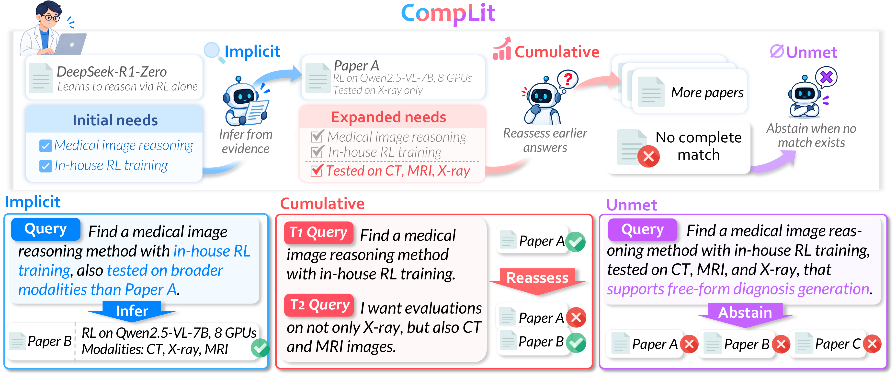
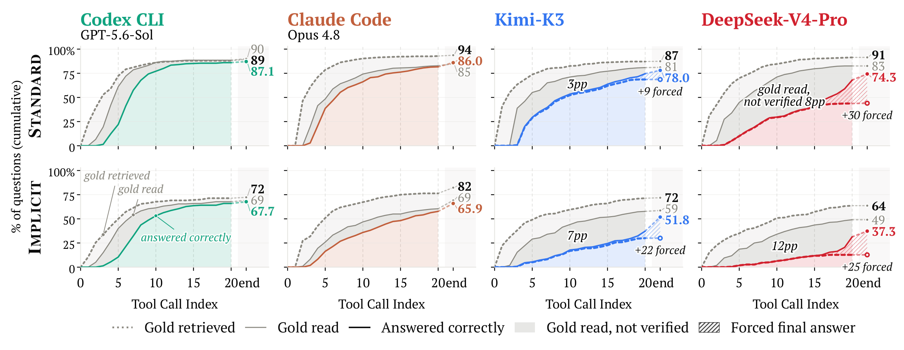
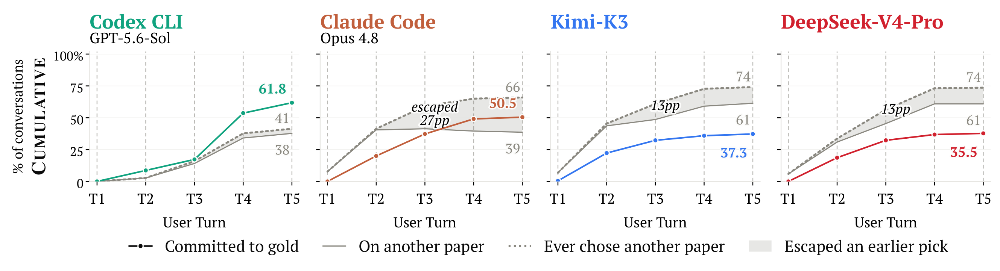

CompLit
Scientific Literature Search Benchmarks Must Cover
Implicit, Cumulative, and Unmet Needs
1Seoul National University 2LG AI Research 3Korea Advanced Institute of Science and Technology
4University of Minnesota 5University of Illinois Chicago 6University of Seoul
Researchers search from what they have read
Researchers now ask agents such as Codex or Claude Code to find the papers they need. The paper an agent returns affects what a researcher builds on, what they cite, and whether they consider an idea new.
Benchmarks such as LitSearch, PaSa, and SAGE build each query from a target paper or a passage that cites it. Such a query reuses the paper's terms, states the whole request at once, and always has an answer. A researcher instead starts from the papers they have already read. They describe what they want in their own terms, which the paper they need may show only implicitly. Their requirements accumulate as they read. And what they look for may not exist yet, so the need is unmet.

Results
CompLit has a Standard setting close to existing benchmarks and one setting for each need: Implicit, Cumulative, and Unmet. The four strongest agents we tested score 74–87% on Standard and lower on each of the other three.
Accuracy (%). On Unmet, only an abstention is correct. On Cumulative, the answer after the last turn is scored. Claude Code and Codex run in their own harnesses with 900 seconds per query; Kimi and DeepSeek run under a 30-message limit, with a forced final answer at the limit. All thirteen baselines are listed further below.
Agents accept near-misses
Each Unmet query starts from a query whose target paper agents already find. We add one requirement the target does not meet, so the target becomes a near-miss and the correct answer is that no paper qualifies. Below is one such query from physics. All four agents open the near-miss and note that it ranks molecules by the highest score rather than the lowest. Codex abstains; the other three return the paper.
Across all Unmet queries, each agent opens the near-miss within its first ten tool calls in over 90% of Unmet queries, yet names a paper as a match in 47–82% of them, usually the near-miss. A researcher who receives such an answer may take an open direction for one already explored.
Final answers on Unmet queries (%). Named another paper: Codex 2.7, Claude 11.7, Kimi 5.3, DeepSeek 6.7. DeepSeek gave no answer on the remaining 0.7%.
Implicit and Cumulative
On Implicit, the target paper is retrieved, opened, and chosen less often than on Standard. Retrieval drops by 12–27 points and the final answer by 19–37, so more is lost after the paper is found. In one biology query, Claude's searches return the target paper ten times, and it does not open it.

On Cumulative, Codex picks a wrong paper in 41% of conversations, against 66–74% for the others. Claude often picks one but recovers from more of them than the other agents; in one electrical engineering conversation it commits to RadioDUN, opens the target paper at the last turn, and writes, "This resolves it — and it overturns my earlier RadioDUN pick, which was wrong for these mechanics." Kimi and DeepSeek rarely recover. Codex and Claude, 2 points apart on Implicit, end 11 points apart.

More cases
Seven more queries from six domains, with each agent's answer and an excerpt of its reasoning. We picked them to show how agents differ; they are not a random sample.
Examples from all eight domains
Each query's requirements come from a comparison table in a survey of that field.
How CompLit is built
Survey authors compare the papers they cover on the distinctions that matter in their field. We turn those table cells into requirements, add claims read from each target's figures and its arXiv record, and write each query around a research intent. We checked every requirement and query by hand, and an automatic check removes any query that another paper among the top 100 retrieved candidates also satisfies. CompLit has 870 single-turn queries and 220 conversations from 193 surveys across all eight arXiv domains.
Unmet queries start from queries whose target three reference systems (Harness-1, DeepSeek-V4-Pro, and GLM-5.2) all find. The added requirement swaps a value in the survey's table or reverses a claim read from one of the target's figures. The source surveys are removed from the search corpus; open-web agents open one in 3.8% of runs, and those runs are not more accurate.
| Benchmark | Inferred requirementsInferred | Requirements over turnsTurns | Queries with no answerNo answer | arXiv domainsDomains |
|---|---|---|---|---|
| LitSearch | – | – | – | 1 |
| PaSa | – | – | – | 1 |
| PaperFindingBench | – | – | – | 1 |
| PaSaMaster-Bench | – | – | – | 6 |
| SAGE | – | – | – | 4 |
| AutoResearchBench | – | – | yes | 1 |
| CompLit | yes | yes | yes | 8 |
From Table 1 of the paper. AutoResearchBench has queries with no answer in its Deep split only.
Accuracy by domain and year
On Standard, Codex leads in physics, EESS, and mathematics, and Claude in statistics and biology. All four agents are more accurate on papers from 2019–23, taken together, than on older or more recent ones.
Accuracy (%) on Standard. n is the number of queries, so one query moves a cell by 1.2–2.5 points. Outlined: best in the row. Finance and economics are pooled.
All baselines
All thirteen baselines drop from Standard to Implicit. The reranked retriever drops by 40 points; the two corpus search agents, which search the same index but read the papers, drop by 27–30.
| Baseline | StandardStd. | ImplicitImpl. | CumulativeCum. | Unmet |
|---|
Accuracy (%). Corpus baselines search a fixed index of 2.95M arXiv papers; web search agents search the open web. "–": not supported. DCI-Agent-Lite runs with GPT-5.4 nano. Underlined: best in each group. Claude Code and Codex CLI use their own web search plus arXiv search and a paper reader, with no turn limit and 900 seconds per query; Kimi and DeepSeek use arXiv search, web search, and the paper reader in inspect_evals, under a 30-message limit. All runs searched the live web on August 12–24, 2026.
Outlook
Judging whether a paper meets a need, and noticing when none does, is something researchers learn over years of reading in a field. An agent that returns a near-miss without pointing out what it lacks leaves the researcher no chance to make that judgment. We see two directions for future work: a harness for literature search, guided by where each agent fails and which papers it finds hard, and a model of a field distilled from its surveys, so that an agent knows how to search the field and check a requirement before the search begins.
Use the data
Four configurations, one test split each. Every row has the query, its requirements with evidence, the target paper (the near-miss on Unmet), and the source survey. Return one paper title per query, or an empty title to abstain. On Cumulative, a gpt-5.4-mini user simulator at temperature 0 delivers fixed user turns. The evaluation code is in the repository.
from datasets import load_dataset # standard · implicit · cumulative · unmet ds = load_dataset("dayoon/CompLit", "implicit", split="test") row = ds[0] print(row["question"]) print(row["paper"]["title"]) # target paper
Citation
@misc{ko2026complit,
title = {CompLit: Scientific Literature Search Benchmarks Must Cover Implicit, Cumulative, and Unmet Needs},
author = {Ko, Dayoon and Kim, Jihyuk and Jeong, Soyeong and Lee, Young-Jun and Lee, Dahyun and Kim, Juyeon and Kim, Gunhee and Lee, Moontae and Lee, Kyungjae},
year = {2026},
url = {https://dayoon-ko.github.io/CompLit/}
}